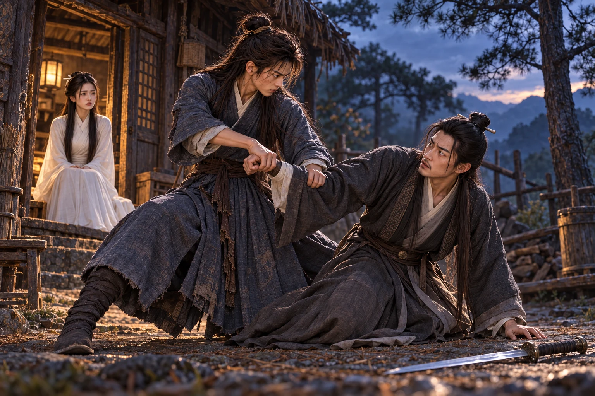
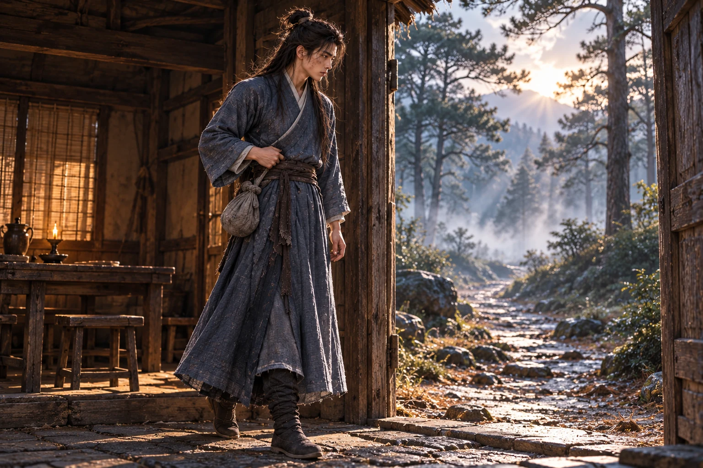

Jahitan di bawah lengan putus ketika ia mengangkat kayu terakhir ke atap.
Ia menahan kayu dengan bahu, mencoba menurunkan tangan tanpa memperlebar sobekan. Dari bawah terdengar suara .
“Dani, turunlah dahulu. Aku melihat jahitan di bawah lenganmu sudah terlepas,” kata Xiaolongnü.
“Izinkan aku memasang kayu terakhir ini, Gugu. Sesudah itu aku turun agar atapnya tidak kembali terbuka,” jawab Dani.
“Kayunya dapat kautahan, tetapi bajumu akan semakin robek jika lenganmu terus diangkat begitu,” kata Xiaolongnü.
Dani menoleh. Gadis itu berdiri di ambang gubuk dengan satu tangan menahan kusen. Wajahnya belum sepenuhnya pulih dari pucat yang dibawa keluar Makam Kuno. Ia hendak mendekat; Dani segera memasang kayu, lalu turun sebelum Xiaolongnü perlu mengangkat kedua lengannya.
Gubuk kosong di lereng itu mereka temukan sehari setelah keluar melalui lorong air. Atap ditambal, lantai dibersihkan, dan dua tempat tidur dipisahkan oleh tikar gantung. Dalam beberapa pekan, batuk Xiaolongnü berkurang; ia mulai berlatih kembali tanpa memaksakan bagian yang masih menimbulkan nyeri. Dani menggunakan pedang kayu. Pedang yang tenggelam di bawah makam tidak kembali hanya karena ia memerlukannya.
Yang tetap menyusahkannya adalah pakaian.
Jubah biru pengganti yang dipakainya sejak tinggal di makam mempunyai potongan sempit di bahu. Jahitan di rusuk sudah pernah ia longgarkan sendiri. Hasilnya membuat satu sisi lebih panjang daripada sisi lainnya.
Xiaolongnü memeriksa sobekan itu.
“Apakah jahitan di rusuk ini kaubuat ketika jubahnya masih melekat di tubuhmu?” tanya Xiaolongnü.
“Aku hendak memastikan kelonggarannya, Gugu. Kupikir hasilnya akan lebih tepat kalau langsung kucoba,” jawab Dani.
Ia menatap Dani sampai pemuda itu menghela napas.
“Memang kujahit sambil kupakai, Gugu. Terutama bagian kiri yang sekarang berkerut itu,” aku Dani.
“Lepaskan jubah luarnya, . Aku perlu membentangkan kainnya agar dapat memperbaiki potongannya,” kata Xiaolongnü.
Di meja, membuka lipatan kain kecil yang dikeluarkan Dani dari buntalannya. Gulungan benang sudah ditambah beberapa kali, tetapi dan bidal di dalamnya masih benda yang sama.
“Jarum dan bidal ini peninggalan ibuku, Gugu,” kata Dani.
Tangannya tetap berada dekat meja. Xiaolongnü berhenti sebelum mengambil jarum.
“Bolehkah aku memakainya untuk menjahit jubahmu? Kalau engkau hendak menyimpannya saja, aku dapat menggunakan jarum lain,” tanya Xiaolongnü.
Dani mengangguk. Ia mengenakan baju dalam berlengan panjang dan duduk di sebelahnya. Angin dari jendela menyentuh tengkuk yang biasanya tertutup jubah; ia menggeser bangku lebih dekat, lalu membantu membentangkan kain agar tidak jatuh ke lantai.
Xiaolongnü membuka jahitan yang buruk itu. Ia menambahkan sepotong kain biru lebih tua pada sisi jubah, mengukur kelonggarannya sebelum menusukkan . Dani memperhatikan bidal di jarinya.
“Apakah yang dahulu mengajari Gugu menjahit?” tanya Dani.
“Sun Popo mengajariku memperbaiki pakaian sendiri. Beliau tidak senang kalau jahitan yang sama harus dibongkar dua kali,” jawab Xiaolongnü.
Sudut mulut Dani bergerak. “Ibuku juga demikian, Gugu. Kalau jahitanku buruk, beliau tidak membiarkanku berpura-pura bahwa kainnya yang salah.”
Jarum berhenti. Xiaolongnü tidak menyuruhnya meneruskan, tetapi ia tidak kembali menjahit sampai Dani berbicara lagi.
“Pernah kujahit lapisan dalam sepatuku sampai semuanya melekat menjadi satu. Kupikir, semakin banyak kain yang tertembus, semakin kuat pula sepatunya,” cerita Dani.
“Lalu apa yang dilakukan ibumu ketika melihat hasilnya?” tanya Xiaolongnü.
“Beliau membongkarnya. Waktu itu aku marah karena merasa sudah bekerja keras, padahal kakiku sendiri kesulitan masuk,” jawab Dani.
Ia mengusap lipatan kain di lututnya. Kali ini ia bisa mengingat ibunya membungkuk di dekat tungku tanpa segera mencari sesuatu untuk mengalihkan perhatian.
“Ketika terakhir kembali ke rumah, aku bahkan lupa kegunaan itu, . Baru sesudah jariku tertusuk aku teringat cara Ibu mendorong jarum,” lanjut .
Xiaolongnü memandang ujung jarinya, lalu melanjutkan jahitan.
“Sekarang engkau sudah mengingatnya kembali. Benda-benda ini masih dapat menemanimu sebagaimana dahulu menemani ibumu,” kata Xiaolongnü.
Dani menunduk. “Benar, Gugu. Setidaknya kali ini jarumnya tidak hanya kusimpan karena takut kehilangan.”
Ia membantu menarik benang yang kusut. Gadis itu membiarkannya. Di makam, tangan mereka biasa bertemu untuk memperbaiki pegangan pedang atau memeriksa aliran tenaga. Di meja kecil itu tidak ada gerakan yang harus dibetulkan. Ketika punggung tangannya menyentuh tangan Xiaolongnü, Dani tidak segera menjauh.
“Kalau aku kembali merobeknya saat bekerja, apakah Gugu masih bersedia memperbaikinya?” tanya Dani.
“Selama kainnya masih dapat disambung, aku akan menjahitnya. Tetapi engkau harus memberitahu sebelum sobekannya terlalu lebar,” jawab Xiaolongnü.
“Gugu belum melihat betapa buruk caraku bekerja di atas atap. Barangkali itu akan lebih sibuk daripada pedangmu,” kata Dani.
“Aku tadi melihatnya sendiri, Dani. Karena itulah aku menyuruhmu turun,” jawab Xiaolongnü.
Ia tertawa pelan. Xiaolongnü menahan kain agar jarumnya tidak bergeser, tetapi kali ini sudut bibirnya ikut terangkat.
Sesudah jubah selesai, ia meminta Dani berdiri dan mengangkat tangan. Sambungan biru tua di kedua sisi memberi ruang bagi bahu dan rusuknya. Gadis itu merapikan kerah yang terlipat, lalu menarik ujung lengan sampai pergelangan Dani tidak lagi terbuka.
Dani hendak mengucapkan terima kasih. Xiaolongnü lebih dahulu bertanya, “Sekarang coba angkat kedua tanganmu. Apakah bahu dan rusukmu masih terasa sesak?”
“Sekarang aku dapat bergerak leluasa, Gugu. Sambungannya tidak menarik rusukku lagi,” jawab Dani.
Tangannya menutup tangan gadis itu yang masih berada pada kerah. Xiaolongnü mengangkat wajah. Dani baru menyadari betapa dekat mereka berdiri; ucapan ringan yang biasa menyelamatkannya tidak datang.
“Aku menyukainya, . Terima kasih sudah memperbaikinya untukku,” kata akhirnya.
Xiaolongnü menatap jubah, kemudian matanya. “Aku senang engkau menyukainya. Sejak tadi aku ingin memastikan engkau nyaman memakainya.”
Namun tangannya baru ditarik setelah Dani melepaskan pegangan.
Xiaolongnü mengumpulkan potongan kain. Ketika ia hendak mengembalikan alat jahit, Dani menunjuk tempat kering di sisi meja.
“Letakkan saja di sisi meja yang kering itu, Gugu. Tidak perlu dikembalikan ke buntalan,” kata Dani.
Gadis itu memandang buntalan yang masih terbuka. Selama bertahun-tahun, Dani selalu menyimpan benda-benda tersebut sendiri setelah memakainya. Bahkan ketika mereka berpindah kamar di makam, ia akan memeriksa lipatannya sebelum tidur.
“Biasanya alat jahit ini segera kausimpan sendiri. Apakah kali ini engkau ingin membiarkannya di sini?” tanya Xiaolongnü.
“Barangkali besok kita memerlukannya lagi. Aku tidak keberatan kalau benda-benda itu berada di dekat Gugu,” jawab Dani.
Xiaolongnü meletakkannya di tempat yang ditunjuk. Dani mengusap sisa benang pada lengan, lalu berkata lebih pelan, “Kalau Gugu memerlukannya, ambil saja. Aku percaya Gugu akan menjaganya seperti aku menjaganya.”
“Aku akan menjaganya baik-baik dan memberitahumu setelah memakainya. Aku tahu benda-benda ini berarti bagimu, Dani,” jawab Xiaolongnü.
Ia tidak menganggap izin itu remeh. Dani dapat mendengarnya dari cara gadis itu menjawab. Sesuatu yang selama ini selalu dibawanya karena takut kehilangan kini dibiarkan berada di tempat yang dapat dijangkau tangan lain.
Menjelang malam, Xiaolongnü menemukan Dani masih duduk di depan pintu. Ia berhenti di sisinya.
“Apakah engkau masih memikirkan ibumu, Dani? Sejak tadi engkau duduk sendirian di sini,” tanya Xiaolongnü.
Dani mengangguk. “Aku mulai lupa suaranya ketika berbicara biasa, Gugu. Aneh sekali, justru cara beliau menegurku masih dapat kuingat dengan jelas.”
Ia mencoba tersenyum, tetapi kali ini tidak berhasil. duduk tanpa meminta meneruskan. Bahu mereka bersentuhan. Setelah beberapa saat, Dani menyandarkan kepalanya sebentar pada rambut gadis itu.
Xiaolongnü tidak bergerak menjauh. Tangannya meraih tangan Dani di atas bangku dan membiarkannya tetap di sana sampai udara menjadi dingin.
Bulan berikutnya mereka dapat berlatih bersama lebih lama. Xiaolongnü kembali mengalahkannya, tetapi napasnya tidak lagi terputus setelah beberapa rangkaian. Latihan lanjutan belum mereka ulang. Kali ini Dani tidak mendesak.
Ia kadang turun untuk membeli beras dan kain. Pada suatu sore ia terlambat pulang karena jalan berlumpur. Xiaolongnü menunggunya di batas pepohonan, bukan di dalam gubuk.
“Gugu, mengapa menungguku sampai keluar ke jalan? Udaranya mulai dingin,” tanya Dani.
“Hari sudah gelap dan engkau belum pulang. Aku ingin melihat apakah engkau sudah muncul di tikungan,” jawab Xiaolongnü.
Ia mengangkat bungkusan beras. “Jalan di bawah berlumpur, Gugu, sehingga aku harus memutar. Lain kali akan kukatakan lebih dahulu kalau ada kemungkinan pulang terlambat.”
“Hari ini aku tidak mengetahuinya. Aku terus bertanya-tanya apakah engkau kesulitan atau tidak hendak kembali,” kata Xiaolongnü.
Tidak ada teguran keras dalam suaranya. Justru itu yang membuat Dani menurunkan bungkusan. Ia melihat ujung sepatu putihnya basah, seolah gadis itu telah beberapa kali berjalan ke arah jalan lalu kembali.
“Aku sudah pulang, Gugu. Aku tidak akan sengaja membiarkanmu menunggu tanpa kabar,” kata Dani.
Xiaolongnü memegang lengan jubahnya, tepat pada sambungan yang baru dijahit. Jemarinya menekan kain sekali, kemudian mengendur.
“Sekarang aku dapat melihatmu dan merasa tenang. Tadi yang dapat kulihat hanya jalan yang kosong,” jawab Xiaolongnü.
Dani menutup tangan itu dengan telapaknya. Mereka kembali ke gubuk sambil berjalan lebih dekat daripada yang diperlukan oleh jalan sempit tersebut.
Malamnya, Xiaolongnü bertanya apakah ia masih ingin pergi melihat tempat-tempat yang pernah diceritakan .
“Aku masih ingin melihat dunia di luar gunung ini, ,” jawab . Ia melihat tangan gadis itu berhenti melipat kain. “Tetapi aku ingin pergi bersama Gugu. Aku tidak sedang mencari alasan untuk meninggalkanmu seorang diri.”
Xiaolongnü tidak langsung menjawab.
“Aku tidak mengenal tempat-tempat yang hendak kaudatangi. Barangkali nanti aku tidak dapat menunjukkan jalan kepadamu,” kata Xiaolongnü.
“Aku pun belum pernah melihatnya, Gugu. Kita dapat mencari jalan bersama; aku hanya ingin engkau berada di sisiku,” jawab Dani.
Ia duduk di sisi meja tempat ibunya biasa disimpan. Xiaolongnü memperhatikan tempat yang dipilihnya, lalu mendorong cawan hangat ke arahnya.
“Kalau begitu, kita akan bertanya kepada orang yang mengenalnya. Aku bersedia pergi bersamamu, Dani,” kata Xiaolongnü.
Dani tersenyum. Ia mulai membicarakan jalan turun gunung, tetapi yang sebenarnya membuatnya lega adalah kata kita.
datang ketika Dani sedang membetulkan pijakan latihan di depan gubuk.
Pemuda itu mula-mula mendengar tawa pendek dari balik pohon. Sesosok tubuh melintas rendah, terlalu cepat untuk diikuti utuh; tahu-tahu pergelangan tangannya dicengkeram.
“Salah! Siapa mengajarimu berdiri begitu? Siapa yang berani merusak pelajaran anakku?” bentak Ouyang Feng.
“Ayah!” seru Dani.
Lelaki tua itu memutar wajahnya ke kiri dan kanan. Rambutnya kusut, matanya mencari sesuatu yang tidak ada di belakang bahu Dani.
“Anakku tidak setinggi ini. Apa yang kaulakukan terhadapnya?” kata Ouyang Feng.
“Sudah bertahun-tahun sejak kita berpisah, Ayah. Tubuhku tumbuh, tetapi aku tetap anak angkatmu,” jawab Dani.
“Tidak! Baru kemarin. Kau meninggalkanku kemarin!” bentak Ouyang Feng.
Pegangannya menyakitkan. tidak menarik diri. “Aku Dani, Ayah. Pandanglah wajahku; tidak ada yang menggantikan aku.”
Ouyang Feng menatapnya lama, lalu menepuk pipinya dengan tangan gemetar. Sesaat kegaduhan di wajahnya mereda.
“Dani… anakku. Mereka tidak membawamu. Tidak boleh ada yang membawamu lagi!” gumam Ouyang Feng.
Dani menggenggam pergelangan tua itu. Ia pernah membayangkan akan mempunyai banyak pertanyaan ketika bertemu kembali. Yang keluar justru, “Ayah sudah makan?”
Pintu gubuk terbuka.
berdiri di ambang, memperhatikan tangan yang mencengkeram Dani. Ouyang Feng langsung memutar tubuh.
“Siapa perempuan itu? Mengapa dia berada bersama anakku?” tanya .
“Beliau Guguku, Ayah. Selama kita terpisah, beliau yang menjaga dan mengajariku—” jawab Dani.
“Anakku sudah mempunyai guru! Tidak boleh direbut! Aku belum mati!” bentak Ouyang Feng.
Ia menyentak Dani ke belakang. Xiaolongnü maju untuk melepaskan pegangan itu. Gerak mereka beradu di depan pintu: lengan putih membelokkan pergelangan, tubuh tua berputar lebih dekat daripada yang diduga, lalu dua jari menyentuh titik pada bahu dan sisi tubuhnya.
Xiaolongnü mendadak kaku.
Dani menangkapnya sebelum ia jatuh. Matanya tetap terbuka, tetapi tangan yang hendak terangkat tidak bergerak.
“Ayah, lepaskan itu. Gugu tidak hendak mencelakai kita,” pinta Dani.
“Diam! Dia mendengar. Dia mencuri!” bentak Ouyang Feng.
“Gugu tidak mencuri pelajaran Ayah. Beliau hanya mengkhawatirkan aku,” jawab .
Ouyang Feng menatap mulut Xiaolongnü, seolah menunggu bantahan. Ketika tidak ada suara keluar, ia tampak puas. Dani merasakan amarah naik, tetapi ingatan tentang telapak yang mengamblaskan tanah menahannya dari tindakan bodoh.
Ia membawa Xiaolongnü ke bangku di dalam. “Gugu, aku akan segera kembali. Aku harus menjauhkan Ayah dari sini dahulu.” bisiknya. Matanya bertahan pada mata gadis itu sampai ia yakin Xiaolongnü mendengar.
Kemudian Dani menoleh kepada ayah angkatnya. “Kalau Ayah hendak mengajariku, mari ke luar. Dari tempat ini Gugu masih dapat melihat gerakan kita.”
Ouyang Feng langsung menariknya menuju pepohonan.
Di sebuah tanah lapang kecil, lelaki tua itu menyuruh Dani merendahkan tubuh. Telapaknya menghantam lengan Dani sebelum kuda-kudanya selesai.
“Bukan tangan! Di sini!” bentak .
Ia menunjuk pinggang, lalu dada, lalu mendadak berbalik dan meneriakkan nama yang tidak Dani kenal. Pemuda itu menunggu celah, menghitung arah kembali ke gubuk.
Ouyang Feng mengeluarkan pil gelap dari lipatan bajunya.
“Telan ini! Terlalu banyak yang menahanmu. Harus dilepaskan semuanya!” perintah Ouyang Feng.
“Obat apa yang Ayah berikan kepadaku?” tanya Dani.
“Obatku! Mau diracun orang lain?” bentak Ouyang Feng.
Dani mengenali kecurigaan yang kembali menajam di mata ayah angkatnya. Ia menerima pil itu untuk menenangkannya, mengira obat tersebut bagian dari pelajaran. Rasa pahit tertinggal ketika ia menelan. Tidak ada penjelasan tentang akibatnya; Ouyang Feng sudah memerintahkannya mengangkat tangan.
Dani bergerak setengah jalan, lalu berhenti dan memandang ke belakang lelaki tua itu.
“Ayah, tadi seperti ada orang yang menjawab dari arah hutan,” kata .
Ouyang Feng berputar.
“Apa yang dikatakannya? Mengapa dia menjawabku?” tanya Ouyang Feng.
“Ia menyebut nama Ayah, tetapi aku tidak sempat melihat orangnya,” jawab Dani.
“Namaku? Siapa tahu namaku?” seru Ouyang Feng.
Lelaki itu menerobos semak sambil berteriak. Dani menunggu sampai bunyi langkah menjauh, kemudian berlari ke gubuk. Rasa bersalah mengikuti beberapa langkah pertama; bayangan mata yang tidak dapat berkedip bebas membuatnya menambah kecepatan.
Pintu gubuk terbuka lebih lebar daripada ketika ia meninggalkannya.
Seorang lelaki berjubah berada di dalam.
Tangan lelaki itu sedang meraih Xiaolongnü. Gadis itu menatap pintu dengan mata tegang; tubuhnya masih tidak dapat menjauh.
Dani tidak memanggil.
Ia masuk dari sisi kusen dan menghantam lengan yang terulur itu dengan pangkal telapak. Lelaki tersebut tersentak, memutar bahu, lalu menangkis pukulan kedua. Gerakannya terlatih. Dani mengambil langkah menyamping yang dipelajarinya di makam, memaksanya berbalik menjauhi bangku.
“Keluar dari rumah ini,” perintah Dani.
“Dengarkan penjelasanku dahulu—” kata lelaki itu.
“Keluar!” bentak Dani.
Lelaki itu mundur melewati ambang. Tangannya bergerak ke gagang pedang. memotong jarak sebelum bilah ditarik utuh, menekan pergelangan ke kusen, lalu menyapu kaki yang menahan berat tubuhnya. Mereka terjatuh bersama di tanah.
Benturan membuat bahu Dani nyeri. Ia tidak melepaskan pegangan. Satu pukulan mengenai wajah lawannya; darah muncul di bibir lelaki itu. Ketika tangan Dani terangkat lagi, ia melihat Xiaolongnü di balik pintu.
Ia menahan pukulan tersebut.
Pedang diseretnya keluar dari jangkauan. Dani menekan lengan lawan ke tanah, cukup keras untuk menghentikan perlawanan, lalu membungkuk.
“Siapa namamu?” tanya Dani.
Lelaki itu menelan ludah. Rambut di dekat pelipisnya lepas dari ikatan.
“Namaku ,” jawab lelaki itu.
“Kau melihat sendiri bahwa dia tidak dapat bergerak. Apa yang hendak kaulakukan?” kata Dani.
“Aku hanya hendak menolongnya,” jawab Zhen Zhibing.
Dani menekan pergelangannya lebih dalam. Rahangnya mengeras sampai kata berikut keluar melalui gigi yang rapat.
“Dia menatapmu seperti itu, dan kau masih berani menyebutnya pertolongan?” desis Dani.
Zhen Zhibing mengalihkan mata. Keheningan yang menyusul lebih jelas daripada pembelaannya.

Dani menariknya bangun dan mendorongnya menjauh dari pintu. “Ingat namaku. Dani Moan. Kalau kau mendekatinya lagi, aku yang akan mencarimu.”
Zhen Zhibing memandang jubah biru itu, kemudian . Dani maju satu langkah. Lelaki tersebut mengambil pedang dari tanah dengan tangan yang sulit ditekuk, lalu mundur ke antara pepohonan. Dani mengawasinya sampai bunyi langkah benar-benar hilang.
Saat berbalik, panas telah menjalar dari perut ke dada.
Xiaolongnü akhirnya dapat menggerakkan ujung jarinya. itu perlahan mengendur, meninggalkan kaku dan nyeri. berlutut di depannya, meminta maaf karena telah membiarkannya sendirian.
“Engkau kembali kepadaku, Dani,” kata Xiaolongnü dengan suara serak.
“Seharusnya aku kembali lebih cepat, Gugu. Aku telah membiarkanmu menghadapi orang itu sendirian,” jawab Dani.
“Tetapi engkau datang sebelum ia sempat melanjutkan perbuatannya. Aku melihatmu di pintu; sejak saat itu aku tahu aku tidak sendirian lagi,” kata Xiaolongnü.
Gadis itu mengulangnya sambil mencengkeram lengan jubah Dani. Ia tidak melepaskan kain tersebut ketika pemuda itu bangkit mengambil air.
Dani duduk kembali. “Aku akan duduk di sini, Gugu. Engkau tidak perlu melepaskan tanganku.”
Xiaolongnü menempelkan kening ke bahunya. Tubuhnya masih gemetar; Dani menahan punggungnya, menunggu sampai napas mereka lebih teratur. Ia ingin pergi memeriksa hutan sekali lagi, memastikan tidak bersembunyi, tetapi gadis itu merapat ketika tangannya bergerak.
“Jangan tinggalkan aku dahulu, Dani. Aku belum sanggup berada seorang diri di rumah ini,” pinta Xiaolongnü.
“Aku akan tetap menemanimu, Gugu,” jawab Dani.
Dani tidak pergi.
Panas dalam tubuhnya justru bertambah. Ia mengira benturan dan kemarahan yang menyebabkannya; kemudian suara Xiaolongnü mulai terdengar jauh meskipun wajah gadis itu berada di dekatnya. Ia berusaha mengatakan bahwa ada yang tidak beres, tetapi pikirannya kehilangan urutan.
“Ayah tadi memberiku sesuatu untuk ditelan…” kata Dani.
“Apa yang diberikannya, Dani? Apakah tubuhmu terasa sakit?” tanya .
Dani mengusap dahi. Ia tidak berhasil menyelesaikan kalimat.
Malam itu keintiman terjadi ketika kesadarannya telah terganggu oleh obat. Xiaolongnü tidak memahami keadaan tersebut; ia mengira sedang menyatakan pilihan yang selama berbulan-bulan belum diberi nama. Mereka memasuki malam yang sama dengan pengertian berbeda. Sesudahnya, Dani tidak mampu menyusun ingatan yang utuh, sementara Xiaolongnü menunggu hari esok sebagai permulaan hidup mereka yang baru.
Pagi datang bersama sakit kepala yang membuat Dani sulit membuka mata.
Xiaolongnü duduk di dekat pembaringannya, sudah berpakaian rapi. Rambutnya disisir, tetapi beberapa helai di pelipis tetap lepas. Ia memegang jubah biru Dani yang telah dilipat.
“Dani, apakah sesudah malam tadi engkau tetap ingin hidup bersamaku?” tanya Xiaolongnü.
Dani menekan pangkal hidung. “Tentu aku ingin tetap bersama Gugu. Mengapa Gugu menanyakannya seperti itu?”
Ia menerima jubah itu. Xiaolongnü belum melepaskan ujungnya.
“Apakah engkau akan menerimaku sebagai istrimu?” tanya Xiaolongnü.
Dani mengangkat wajah. Kata tersebut seperti datang dari percakapan yang tidak diikutinya. Ada pintu terbuka dalam ingatan, tangan pada lengannya, lalu bagian-bagian gelap yang tidak dapat ditembus.
“Gugu mengatakan ingin menjadi istriku?” ulang Dani.
Xiaolongnü mengangguk kecil.
“Tentang malam tadi, Gugu…” Dani berhenti. Ia benar-benar tidak tahu bagaimana menyusun pertanyaan berikutnya. “Apa yang telah kukatakan kepadamu? Ada bagian yang tidak dapat kuingat, dan aku takut menjawab sesuatu yang belum kupahami.”
Jari gadis itu mengendur pada kain.
“Apakah engkau tidak mengingat apa yang terjadi di antara kita?” tanya .
“Sebagiannya kuingat, Gugu, tetapi kepalaku terasa berat. Setiap kali hendak kuurutkan, ingatannya terputus—” jawab Dani.
Ia membungkuk ketika rasa mual naik. Xiaolongnü mengulurkan cawan. menerimanya dengan kedua tangan dan minum perlahan, berharap air dapat mengembalikan bagian waktu yang hilang.
“Jadi engkau masih memandangku hanya sebagai Gugu yang mengajarimu selama ini?” tanya Xiaolongnü.
“Sejak pertama masuk ke makam, aku memanggilmu Gugu. Engkaulah yang menjaga dan mengajariku ketika tidak ada lagi tempat bagiku,” jawab Dani.
Dani menatapnya. Jawaban yang paling mudah adalah yang telah mereka pakai bertahun-tahun. “Engkau guruku, Gugu. Pagi ini engkau meminta aku menyebutmu sebagai istri, sedangkan aku belum memahami apa yang terjadi semalam. Tolong katakan, bagaimana seharusnya aku memandang hubungan kita sekarang?”
Xiaolongnü menurunkan mata. Ia telah membayangkan begitu banyak hal dari satu malam, sementara Dani kembali pada sebutan yang lama tanpa tampak memahami apa yang dihancurkannya.
“Bagiku engkau sudah menjadi orang yang ingin kujadikan suami. Apakah dalam hatimu aku tetap hanya seorang guru?” tanya Xiaolongnü.
Dani membuka mulut. Ia ingin mengatakan bahwa ia tidak pernah menunggu seorang guru pulang seperti ia menunggu langkah gadis itu. Bahwa gubuk ini tidak berarti apa-apa jika Xiaolongnü tidak berada di dalamnya. Namun ia masih berusaha mengejar percakapan yang terasa bergerak terlalu cepat.
“Beri aku sedikit waktu, Gugu. Aku ingin menjawabmu dengan benar, tetapi sekarang pikiranku masih kacau,” pinta Dani.
Xiaolongnü mengangguk. Terlalu tenang.
Ia membantu Dani mengenakan jubah, seperti pada sore ketika jahitannya selesai. Kali ini tangannya berhenti sebelum menyentuh kerah.
“Air di tempayan tinggal sedikit, Dani. Barangkali membasuh wajah akan membuat kepalamu lebih ringan,” kata Xiaolongnü.
Dani berpegangan pada meja ketika berdiri. Ia akan mengambil air, membasuh muka, lalu kembali dan meminta Xiaolongnü menceritakan semuanya dari awal. Itu tampak seperti urutan yang masih sanggup dikerjakannya.
Ketika ia mencapai pintu, gadis itu memanggil.
“Dani, sebelum engkau pergi…” panggil .
Ia menoleh.
Xiaolongnü memandangnya dengan bibir terbuka sedikit, lalu menggeleng. “Berhati-hatilah ketika menuruni batu di dekat air. Permukaannya masih licin.”
Gubuk telah kosong ketika ia kembali.
meletakkan air terlalu keras. Sebagian tumpah pada kakinya. Ia memanggil ke belakang rumah, kemudian ke jalan tempat mereka biasa berlatih. Tidak ada jawaban.
Pedang Xiaolongnü tidak berada di dekat pembaringan. Beberapa pakaiannya juga telah dibawa.
Di meja, ibunya tersimpan kembali bersama bidal. Seutas benang biru tua masih menjulur dari gulungannya.
Dani duduk, lalu segera berdiri lagi. Kini tidak ada orang yang bertanya, tidak ada suara yang harus dijawab; bagian-bagian malam itu mulai kembali justru ketika ia tidak dapat menanyakan kebenarannya kepada siapa pun. Pil pahit. Panas yang tidak wajar. Kalimat yang putus sebelum ia sempat menjelaskan.
Ia teringat pertanyaan Xiaolongnü tentang seorang istri.
Dani menutup mata. Gadis itu telah berbicara tentang masa depan, dan ia menyambutnya seolah sedang mendengar kekeliruan.
“Gugu, bukan penolakan yang hendak kusampaikan kepadamu,” gumam Dani.
Gubuk tidak memberikan kesempatan kedua.
Ia tidak akan menyusun ingatan yang hilang menjadi alasan yang nyaman. Ada sesuatu yang terjadi ketika ia tidak sepenuhnya sadar, dan Xiaolongnü membawa pengertian yang belum sempat mereka periksa bersama. Ia harus menemukannya. Mendengarkan. Mengatakan dengan jelas apa yang selama ini disembunyikannya di balik kebiasaan memanggil Gugu.
Dani meraih alat jahit, membungkusnya hati-hati, lalu mengikat buntalan pada pinggang. Di ambang ia berhenti. Jari-jarinya menyentuh sambungan kain pada rusuk—ruang yang dibuat Xiaolongnü agar ia dapat bergerak tanpa kesakitan.
Ia mencintai perempuan yang menjahitnya.

Perasaan itu tidak muncul pagi ini. Ia telah ada ketika Dani bergegas pulang membawa beras, ketika sebuah tangan memegang lengannya di batas hutan, ketika ia menjawab bahwa ia ingin melihat dunia bersamanya. Ia hanya terlambat mengakuinya dengan nama yang diminta .
“Aku mencintaimu, Gugu. Seharusnya itulah yang kukatakan ketika engkau masih di sini,” ucapnya, tanpa orang yang semestinya mendengar.
Kemudian Dani turun menuju jalan. Kali ini ia pergi untuk membawa pulang sebuah jawaban, bukan menundanya lagi.